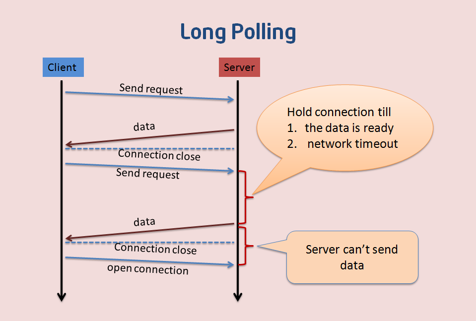
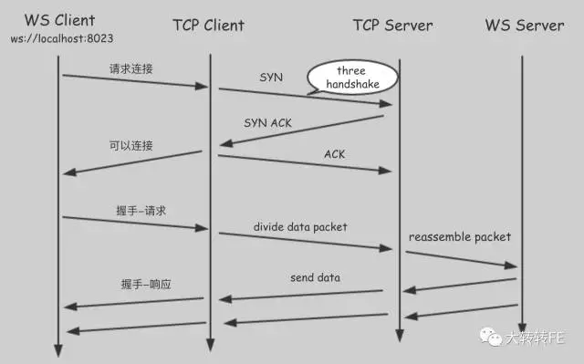

webstock 学习
前言
本人平时学习及收集内容，欢迎参入一起讨论。
内容
一、什么是 WebSocket 协议
websocket是HTML5规范中的一部分，它借鉴了socket这种思想，为web应用程序客户端和服务端之间提供了一种全双工通信机制。同时，它又是一种新的应用层协议，websocket协议是为了提供 web 应用程序和服务端全双工通信而专门制定的一种应用层协议，通常它表示ws://echo.websocket.org/?encoding=text HTTP/1.1，可以看到除了前面的协议名和http不同之外，它的表示地址就是传统的url地址。
二、为什么要用 WebSocket
- 现有的 HTTP 的架构模式
- HTTP 的特点
- 了解 HTTP 轮询，长轮询及存在的问题
2.1 现有的 HTTP 的架构模式
HTTP是客户端/服务器模式中请求-响应所用的协议，在这种模式中，客户端(一般是 web 浏览器)向服务器提交HTTP请求，服务器响应请求的资源。
2.2 HTTP 的特点
HTTP是半双工协议，也就是说，在同一时刻浏览只能单向流动，客户端向服务器发送请求，然后服务器响应请求。服务器不能主动推送数据给浏览器。当然这个HTTP2已经实现。- 当初这么设计也是有原因的，假如服务器能主动推送数据给浏览器的话，那么浏览器很容易受到攻击，比如一些广告商会主动把一些广告信息强行的传输给客户端。
- 半双工的缺点是：效率非常低。
2.3 了解 HTTP 轮询，长轮询及存在的问题
- 一般情况下，浏览器访问网页时，会向页面所在的服务器发送一个 HTTP 请求，Web 服务器确认请求并向浏览器返回响应。但是像股价，实时新闻等到达浏览器
- 显示页面时已经过时了，如果用户想要得到最新的实时信息，他们就要不断的刷新页面，这种显然是不切实际的。
- 轮询： 轮询是通过浏览器定时的向
web服务器发送http的get请求，服务器收到请求后，就把最新的数据发回给客户端，客户端得到数据后，将其显示出来，然后再定期的重复这一过程，虽然可以满足需求，但是存在一些缺点，比如某一段时间内web服务器没有更新的数据，但是浏览器仍然需要定时的发送 Get 请求过来询问，那么即浪费了带宽，又浪费了cpu的利用率。如图：
- 长轮询： 客户端向服务器请求信息，并在设定的时间段内打开一个连接，服务器如果没有任何信息，会保持请求打开，直到有客户端可用的信息，或者直到指定的超时用完为止。这个时候，客户端会重新向服务器请求信息。长轮询也可以叫做
comet或反向ajax。它会延长HTTP响应的完成，直到服务器有需要发送给客户端的内容，这种技术通常可以叫“挂起 GET”或“搁置 POST”- 缺点是：当信息量非常大的时候，长轮询相对于
http轮询并没有明显的性能优势，因为客户端必须频繁地重连到服务器以读取新信息。造成网络的表现和常规轮询相同。
- 缺点是：当信息量非常大的时候，长轮询相对于

参考资料:Web 端即时通讯技术盘点：短轮询、Comet、Websocket、SSE
三、了解 WebSocket
WebSocket 是一种全双工，双向，单套接字连接，使用 WebSocket，HTTP 请求变成打开 Websocket 的链接的单一请求，并且重用从客户端到服务器以及服务到客户的同一连接。
WebSocket 减少了延迟，因为一旦建立起 WebSocket 连接，服务器可以在消息可用时发送他们。和轮询不同的是：WebSocket 只发出一个请求，服务器不需要等待来自客户端的请求，且客户端可以在任何时候向服务器端发送消息，和轮询相比的话，不管是否有可用消息，每隔一段时间都发送一个请求，单一请求大大减少了延迟。如图： 
3.1 特点
- 握手阶段采用 HTTP 协议，默认端口是 80 和 443
- 建立在 TCP 协议基础之上，和 HTTP 协议属于应用层
- 可以发送文本，也可以发送二进制数据
- 没有同源限制，客户端可以与任意服务器通信
- 协议标识符是 ws(如果加密，为 wss)，如
ws://localhost:8023
3.2 优点
- WebSocket 使实时通信更加有效。能节约带宽，CPU 资源并减少延迟。
- WebSocket 使 Web 上客户端和服务器之间的通信变得更加的简单。
- Websocket 是一个底层网络协议，我们可以在它的基础之上构建其他的标准协议。
- 较少的控制开销。连接创建后，ws 客户端、服务端进行数据交换时，协议控制的数据包头部较小。在不包含头部的情况下，服务端到客户端的包头只有 2~10 字节（取决于数据包长度），客户端到服务端的的话，需要加上额外的 4 字节的掩码。而 HTTP 协议每次通信都需要携带完整的头部。
3.3 应用场景
聊天，大型多人在线游戏，股票交易应用或实时新闻等。
四、WebkSocket 相关 API
4.1 客户端的 API
- WebSocket 构造函数
- webSocket.readyState
- webSocket.onopen
- webSocket.onclose
- webSocket.onmessage
- webSocket.send
- webSocket.bufferedAmount
- webSocket.onerror
WebSocket 构造函数
WebSocket对象作为一个构造函数，用于新建WebSocket实例。
var ws = new WebSocket('ws://localhost:8080');
执行上面语句之后，客户端就会与服务器进行连接。实例对象的所有属性和方法清单，参见这里。
webSocket.readyState
readyState属性返回实例对象的当前状态，共有四种。
CONNECTING：值为 0，表示正在连接。OPEN：值为 1，表示连接成功，可以通信了。CLOSING：值为 2，表示连接正在关闭。CLOSED：值为 3，表示连接已经关闭，或者打开连接失败。
下面是一个示例。
switch (ws.readyState) {
case WebSocket.CONNECTING:
// do something
break;
case WebSocket.OPEN:
// do something
break;
case WebSocket.CLOSING:
// do something
break;
case WebSocket.CLOSED:
// do something
break;
default:
// this never happens
break;
}
2
3
4
5
6
7
8
9
10
11
12
13
14
15
16
17
webSocket.onopen
实例对象的onopen属性，用于指定连接成功后的回调函数。
ws.onopen = function () {
ws.send('Hello Server!');
}
2
3
如果要指定多个回调函数，可以使用addEventListener方法。
ws.addEventListener('open', function (event) {
ws.send('Hello Server!');
});
2
3
webSocket.onclose
ws.onclose = function(event) {
var code = event.code;
var reason = event.reason;
var wasClean = event.wasClean;
// handle close event
};
ws.addEventListener("close", function(event) {
var code = event.code;
var reason = event.reason;
var wasClean = event.wasClean;
// handle close event
});
2
3
4
5
6
7
8
9
10
11
12
13
webSocket.onmessage
实例对象的onmessage属性，用于指定收到服务器数据后的回调函数。
ws.onmessage = function(event) {
var data = event.data;
// 处理数据
};
ws.addEventListener("message", function(event) {
var data = event.data;
// 处理数据
});
2
3
4
5
6
7
8
9
注意，服务器数据可能是文本，也可能是二进制数据(blob对象或Arraybuffer对象)。
ws.onmessage = function(event){
if(typeof event.data === String){
console.log("Received data string");
}
if(event.data instanceof ArrayBuffer){
var buffer = event.data;
console.log('Received arraybuffer');
}
}
2
3
4
5
6
7
8
9
10
除了动态判断收到的数据类型，也可以使用binaryType属性，显示指定收到的二进制数据类型。
// 收到的是blob数据
ws.binaryType = 'blob';
ws.onmessage = function(e){
console.log(e.data.size);
}
// 收到的是ArrayBuffer数据
ws.binaryType = 'arraybuffer';
ws.onmessage = function(e){
console.log(e.data.byteLength);
}
2
3
4
5
6
7
8
9
10
11
webSocket.send()
实例对象的send()方法用于向服务器发送数据。
发送文本的例子。
ws.send('你大爷');
发送Blob对象的例子。
var file = document.querySelector('input[type="file"]').files[0];
ws.send(file);
2
发送ArrayBuffer对象的例子。
// Sending canvas ImageData as ArrayBuffer
var img = canvas_context.getImageData(0, 0, 400, 320);
var binary = new Uint8Array(img.data.length);
for (var i = 0; i < img.data.length; i++) {
binary[i] = img.data[i];
}
ws.send(binary.buffer);
2
3
4
5
6
7
webSocket.bufferedAmount
实例对象的bufferedAmount属性，表示还有多少字节的二进制数据没有发送出去。它可以用来判断发送是否结束。
var data = new ArrayBuffer(100000);
socket.send(data);
if(socket.bufferedAmount ===0){
// 发送完毕
}else{
// 发送还没结束
}
2
3
4
5
6
7
8
webSocket.onerror
实例对象的onerror属性，用于指定报错时的回调函数。
socket.onerror = function(event){
// handle error event
}
socket.addEventListener('error',function(event){
// handle error event
})
2
3
4
5
6
7
4.2 服务端
常用的 Node 实现有以下三种
五、完整例子
5.1 客户端代码
<!DOCTYPE html>
<html>
<head lang="en">
<meta charset="UTF-8">
<title></title>
<style>
*{
margin: 0;
padding: 0;
}
.message{
width: 60%;
margin: 0 10px;
display: inline-block;
text-align: center;
height: 40px;
line-height: 40px;
font-size: 20px;
border-radius: 5px;
border: 1px solid #B3D33F;
}
.form{
width:100%;
position: fixed;
bottom: 300px;
left: 0;
}
.connect{
height: 40px;
vertical-align: top;
/* padding: 0; */
width: 80px;
font-size: 20px;
border-radius: 5px;
border: none;
background: #B3D33F;
color: #fff;
}
</style>
</head>
<body>
<ul id="content"></ul>
<form class="form">
<input type="text" placeholder="请输入发送的消息" class="message" id="message"/>
<input type="button" value="发送" id="send" class="connect"/>
<input type="button" value="连接" id="connect" class="connect"/>
</form>
<script>
var oUl=document.getElementById('content');
var oConnect=document.getElementById('connect');
var oSend=document.getElementById('send');
var oInput=document.getElementById('message');
var ws=null;
oConnect.onclick=function(){
ws=new WebSocket('ws://localhost:5000');
ws.onopen=function(){
oUl.innerHTML+="<li>客户端已连接</li>";
}
ws.onmessage=function(evt){
oUl.innerHTML+="<li>"+evt.data+"</li>";
}
ws.onclose=function(){
oUl.innerHTML+="<li>客户端已断开连接</li>";
};
ws.onerror=function(evt){
oUl.innerHTML+="<li>"+evt.data+"</li>";
};
};
oSend.onclick=function(){
if(ws){
ws.send(oInput.value);
}
}
</script>
</body>
</html>
2
3
4
5
6
7
8
9
10
11
12
13
14
15
16
17
18
19
20
21
22
23
24
25
26
27
28
29
30
31
32
33
34
35
36
37
38
39
40
41
42
43
44
45
46
47
48
49
50
51
52
53
54
55
56
57
58
59
60
61
62
63
64
65
66
67
68
69
70
71
72
73
74
75
76
77
5.2 服务端代码
var app=require('http').createServer(handler);
var ws=require('nodejs-websocket');
var fs=require('fs');
app.listen(80);
function handler(req,res){
fs.readFile(__dirname+'/client.html',function(err,data){
if(err){
res.writeHead(500);
return res.end('error ');
}
res.writeHead(200);
res.end(data);
});
}
var server=ws.createServer(function(conn){
console.log('new conneciton');
conn.on("text",function(str){
broadcast(server,str);
});
conn.on("close",function(code,reason){
console.log('connection closed');
})
}).listen(5000);
function broadcast(server, msg) {
server.connections.forEach(function (conn) {
conn.sendText(msg);
})
}
2
3
4
5
6
7
8
9
10
11
12
13
14
15
16
17
18
19
20
21
22
23
24
25
26
27
28
29
参考资料
联系作者
平凡世界，贵在坚持。